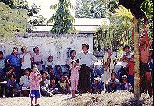
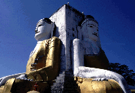

チャイプーンパゴダ/バゴー
KyaikPunPagoda/Bago
高さ30メートルの角柱の四面それぞれに造られた四面大仏。でかい。
寝そべったらシュエターリャウンの寝釈迦像くらいはあるのでは。
その割にはひっそりとした雰囲気。交通の便は悪そうだが昼寝にはもってこいの場所かも。

参道（といっても何もない道）で見かけた風景。油を塗った竹竿のてっぺんにお金が挟んであり、それを3人1組で登っていって取るというゲーム。

本人真剣。周りは大笑い。

で、件の四面大仏。このまま火を吹いて飛んで行きそうなフォルムである。カッコいい。
先ほどの竹竿登りゲームと違ってこちらは4人1組で四方を睥睨している。

見にくくて恐縮だが南面の大仏の向かって左側に登り梯子が付いている。中央角柱部分の屋上に取り付けられた電飾のメインテナンス用の登り口らしいのだが、登ってみたかった〜。
次はマンダレーだ！
ミャンマーパゴダ列伝のページへ
珍寺大道場 HOME